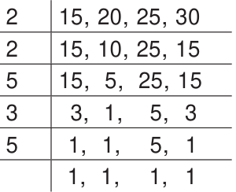

<!DOCTYPE html>
<html lang="en">
<head>
<meta charset="UTF-8">
<meta name="viewport" content="width=device-width,initial-scale=1">
<title>1.7 Application Problems on HCF and LCM — Numbers</title>
<meta name="description" content="Class 6 Mathematics · Term 2 · Numbers · 1.7 Application Problems on HCF and LCM">
<link rel="icon" href="data:image/svg+xml,<svg xmlns='http://www.w3.org/2000/svg' viewBox='0 0 100 100'><text y='.9em' font-size='90'>📘</text></svg>">
<link rel="stylesheet" href="../../../assets/book.css">
<link rel="stylesheet" href="https://cdn.jsdelivr.net/npm/katex@0.16.11/dist/katex.min.css" crossorigin="anonymous">
</head>
<body>
<header class="topbar">
<div class="topbar-in">
  <div class="crumb">
    <span class="c1"><a href="../../../index.html">Library</a> · <a href="../../index.html">Class 6 Mathematics · Term 2</a></span>
    <span class="c2">Numbers · 1.7 Application Problems on HCF and LCM</span>
  </div>
  <a class="tb-btn" data-nav="prev" href="../../01-numbers/08-common-multiples-1.6/index.html" title="1.6 Common Multiples">←</a>
  <details class="drawer"><summary class="tb-btn" title="Sections in this chapter">☰</summary>
<div class="drawer-panel"><div class="dh">Numbers</div><a href="../01-chapter-opener/index.html">Chapter opener</a><a href="../02-introduction-1.1/index.html">1.1 Introduction</a><a href="../03-prime-and-composite-numbers-1.2/index.html">1.2 Prime and Composite Numbers</a><a href="../04-rules-for-test-of-divisibility-of-numbers-1.3/index.html">1.3 Rules for Test of Divisibility of Numbers</a><a href="../05-prime-factorisation-1.4/index.html">1.4 Prime Factorisation</a><a href="../06-exercise-1.1/index.html">Exercise 1.1</a><a href="../07-common-factors-1.5/index.html">1.5 Common Factors</a><a href="../08-common-multiples-1.6/index.html">1.6 Common Multiples</a><a href="../09-application-problems-on-hcf-and-lcm-1.7/index.html" aria-current="page">1.7 Application Problems on HCF and LCM</a><a href="../10-relationship-between-the-numbers-and-their-hcf-and-lcm-1.8/index.html">1.8 Relationship between the Numbers and their HCF and LCM</a><a href="../11-exercise-1.2/index.html">Exercise 1.2</a><a href="../12-exercise-1.3/index.html">Exercise 1.3; Miscellaneous Practice Problems</a><a href="../13-summary/index.html">Summary</a></div></details>
  <a class="tb-btn" data-nav="next" href="../../01-numbers/10-relationship-between-the-numbers-and-their-hcf-and-lcm-1.8/index.html" title="1.8 Relationship between the Numbers and their HCF and LCM">→</a>
  <button class="tb-btn" data-theme-toggle title="Toggle light / dark" aria-label="Toggle light or dark theme">◐</button>
</div>
<div class="progress"><span style="width:19.1%"></span></div>
</header>
<main class="wrap">
<div class="sec-head">
  <p class="eyebrow"><a href="../index.html">Chapter 1 · Numbers</a></p>
  <h1>1.7 Application Problems on HCF and LCM</h1>
  <p class="sec-meta">Textbook pages 17–19 · 1 figure</p>
</div>
<article class="prose">
<p>Let us see the word problems that involve the HCF and the LCM concepts in daily life situations. Example 6: What is the greatest number that will divide 62, 78 and 109 leaving remainders 2, 3 and 4 respectively?</p>
<p>Solution: Get all the common factors of \(62 - 2\), \(78 - 3\) and \(109 - 4\), i.e., 60, 75 and 105 and see that the common factors will divide them all. The greatest number is the H.C.F of 60, 75 and 105.</p>
<div class="mathblock"><p>\(60=2 x 2 x 3 x 5 75=3 x 5 x 5 105=3 x 5 x 7\)</p></div>
<p>Hence, the HCF is \(3 x 5=15\), which is the greatest number that will divide 62, 78, 109 leaving remainders 2, 3 and 4 respectively.</p>
<p>Example 7: A book seller has 175 English books, 245 Science books and 385 Mathematics books. He wants to sell the books in a box, subject-wise in equal numbers. What will be the greatest number of the boxes required? Also find the number of books for each subject in a box.</p>
<p>Solution: This is a HCF related problem. So, we need to find the HCF of 175, 245 and 385.</p>
<p>5 175 5 245 5 385 5 35 7 49 7 77 7 7 7 7 11 11 1 1 1</p>
<div class="mathblock"><p>\(175 = 5 x 5 x 7\); \(245 = 5 x 7 x 7\); \(385 = 5 x 7 x 11\)</p></div>
<aside class="sidenote"><p>Numbers</p></aside>
<p>The HCF of 175, 245 and 385 is the product of the common factors 5 and 7 i.e, \(5 x 7=35\) Since each box contains equal number of books, the greatest possible number of boxes \(= 35\) The number of English books in each box \(= 175 \div 35=5\) The number of Science books in each box \(= 245 \div 35=7\) The number of Maths books in each box \(= 385 \div 35=11\) Hence, the total number of books in each box is 5+7+11=23.</p>
<h2 class="callout-h" id="s-note">Note</h2>
<p>●LCM is always greater than or equal to the largest of the given numbers. ●LCM will always be a multiple of HCF. Further, \(LCM &gt; HCF\). ●LCM (x, y) \(= y\), if y is a multiple of x. For example, LCM (3, \(6) = 6\).</p>
<p>Example 8: Find the ratio of the HCF and the LCM of the numbers 18 and 30. Solution: Now, \(18 = 2 x 3 x 3\) and \(30 = 2 x 3 x 5\) and their HCF is \(2 x 3 = 6\) and LCM is \(2 x 3 x 3 x 5 = 90\) Hence, HCF : \(LCM = 6:90 = 1:15\)</p>
<p>Example 9: Find the smallest number that can be divided by 254 and 508 which leaves the remainder 4. Solution: All common multiples of 254 and 508 will be 2 254, 508 divisible by both the numbers. Let us find the 2 127, 254 LCM of 254 and 508 (by division method). 127 127, 127</p>
<div class="mathblock"><p>LCM of 254, \(508 = 2 x 2 x 127 = 508 1\), 1</p></div>
<p>Thus, 508 is the smallest common number that is divisible by 254 and 508. Now, as we need remainder 4 while dividing, the required number is 4 more than the LCM and so, the required number is \(508 + 4 =512\).</p>
<p>Example 10: What is the smallest 5 digit number that is exactly divisible by 72 and 108? Solution: First let us find the LCM of 72 and 108 2 72,108 (by division method). 2 36,54 2 18,27 LCM of 72 and \(108= 2 x 2 x 2 x 3 x 3 x 3 = 216 3 9,27\) Now, all multiples of 216 will also be common multiples of 3 3,9 72 and 108. 3 1,3 The smallest 5 digit number \(= 10,000\). 1,1 Now, \(10,000 \div 216\) gives quotient as 46 and remainder as 164. Hence the next multiple of 216 i.e., \(216 x 47 = 10,152\) is the required smallest 5 digit number that is exactly divisible by 72 and 108.</p>
<p>Example 11: There are four Mobile Phones in a house. At 5 a.m, all the four Mobile Phones will ring together. Thereafter, the first one rings every 15 minutes, the second one rings every 20 minutes, the third one rings every 25 minutes and the fourth one rings every 30 minutes. At what time, will the four Mobile Phones ring together again? Solution: This is a LCM related sum. So, we need to find the LCM of 15, 20, 25 and 30.</p>
<figure class="fig table-fig"></figure>
<aside class="sidenote"><p>related to the topic to cre-To know additionalDo you know?To give space for learning more informationate interest.and to face higher challenges in Mathematics and to face and Challenging MiscellaneousExaminations.CompetitiveproblemsTo enjoy learning Math-ematics by doingMathematics is a unique symbolic language in which the whole world worksand acts accordingly. This text book is an attempt to make learning ofThe main goal of Mathematics in School Education is to mathematiseActivityLet's use the QR code in the text books! How?• • • • Download the QR code scanner from the Google PlayStore/ Apple App Store into your smartphoneOpen the QR code scanner applicationOnce the scanner button in the application is clicked, camera opens and then bring it closer to the QR code in the text book.Once the camera detects the QR code, a url appears in the screen.Click the url and go to the content page.Mathematics is not about numbers, equations, computationsthe child’s thought process. It will be useful to know how toMathematics easy for the students community.mathematise than to know a lot of Mathematics. or algorithms; it is about understandingTo understand that Mathematics can be - William Paul Th urston \(\frac{em}{liv}\) experienced everywhere inGo, Search the content nature and real life.and Learn more!ICT Corner A few questions which reinforcement of the provide scope for Try this/thesecontent learnt.important factsand conceptsTo knowTo think \(deep^{Note}and\) exploreyourself! Th ink What do you think about this conversation? Was Mani right?No! it would still be “Ten thousand people visited!”. Newspapers give (and readers want) a sense of the size, NOT exact values when numbers are large.You have probably heard names like “lakhs” and “crores” used by elders.MallikaMani MallikaMani 1.1 IntroductionRead the following conversation between two classmates. Mani Learning Objectives●●●●●ChapterTo understand large numbers and the terms used to represent them.To compare large numbers and order them.To employ estimation for large numbers.To solve word problems involving four fundamental operations.To understand and use the properties of Whole Numbers.1: Don’t you see? If I had not gone, they : Why… what is so important about it?: Wow! That's a lot of people. : Thank : (Reading Newspaper Headlines) would have written “Nine thousand nine hundred and ninety-nine people only visited the trade fair yesterday”. It would have been diffi cult to read and understand!trade fair exactly yesterday!“Ten thousand people visited the trade fair yesterday”.goodness, I NUMBERSwent 1to the Is your answer 10? Is it the same for all in the class? Verify it with your friend who might have started with a number other than your number. Surprised? What if you started with a fraction, say 2●2.1 Introduction answer will be 10. Let us verify the game for two more numbers, say 4 and 9.●Learning Objectives●●●●Think of any numberChapterStep 1Step 1Step 1If the initial number is 9, Are you ready for a number game? Follow the steps below carefully:If the initial number is 4,To describe, extend, create numeric and geometric patterns.To make predictions related to the patterns and investigate repeating patterns.To understand the role of 'variables' in patterns.To use variables in simple algebraic expressions and equations to describe relationships.249 1 or 4Multiply it by \(29 \times 2 = 183\) or 5Step \(24 \times 2 = 8INTRODUCTION TO\) ALGEBRAStep 2Step 24 ? In this game, regardless of the number you started with, the Add 20Step \(318 + 20 = 388 + 20 =\) 28Step 3Step 339Divide by 2Step \(438 \div 2 = 1928 \div 2 =\) 14Step 4Step 4Subtract the original number you had thought in step 1Step \(514 - 4 = 1019 - 9 =\) 10Step 5Step 5 Recap 1. 3. Write \(&gt; ,&lt;\) or = in the box.4. 6. Joseph has a flower garden. Draw a picture which shows that 107. 2. 5. Anban says that 6Learning Objectives●●●●●ChapterWhich of the following fractions is not a proper fraction?(a) 3(i) 8Arrange these fractions from the least to the greatest : 2Malarkodi has 10 oranges. If she ate 4 oranges, what fraction of oranges was not are red and the rest of them are yellow.eaten by her?(a) 15The equivalent fraction of 7To understand the concept of ratio.To use ratio notation and simplify ratios.To divide a quantity into two parts in a given ratio.To recognise the relationship between ratio and proportion.To use the unitary method and solve simple ratio problems.35 1 2 101 (b) 49(b) 32 th of the group of triangles given below are blue. Is he correct? RATIO AND PROPORTION2 1 1 is _________. (c) 49(c) 10(ii) 125 97 55 43(d) 7100(d) 510 1 , 41 , 86 , 82 th of the flowers 1</p></aside>
<p>The LCM of 15, 20, 25 and 30 is \(2 x 2 x 3 x 5 x 5 = 300\) minutes \(= 5 x 60\) minutes \(= 5 x 1\) hour \(= 5\) hours Thus, the four Mobile Phones will ring together again at 10.00 a.m.</p>
<h2 class="callout-h" id="s-try-this">Try this</h2>
<p>A small boy went to a town to sell a basket of wood apples. On the way, some robbers grabbed the fruits from him and ate them. The small boy went to the King and complained. The King asked him, “How many wood apples did you bring?”. The boy replied, “Your Majesty! I didn’t know, but I knew that if you divided my fruits into groups of 2, one fruit would be left in the basket”. He continued saying that if the fruits were divided into groups of 3, 4, 5 and 6, the fruits left in the basket would be 2, 3, 4 and 5 respectively. Also, if the fruits were divided into groups of 7, no fruit would be there in the basket. Can you find the number of fruits, the small boy had initially? (This problem is taken from the famous Mathematics problems collection book in Tamil called “Kanakkathikaram” under the heading of “Wood Apple Problem”)</p>
</article>
<nav class="pager"><a class="" data-nav="prev" href="../../01-numbers/08-common-multiples-1.6/index.html"><span class="dir">← Previous</span><span class="t">1.6 Common Multiples</span><span class="ch">Numbers</span></a><a class="nx" data-nav="next" href="../../01-numbers/10-relationship-between-the-numbers-and-their-hcf-and-lcm-1.8/index.html"><span class="dir">Next →</span><span class="t">1.8 Relationship between the Numbers and their HCF and LCM</span><span class="ch">Numbers</span></a></nav>
</main><footer class="site">Generated from the source textbook PDFs · text, figures and exercises belong to their respective publishers.</footer><script defer src="https://cdn.jsdelivr.net/npm/katex@0.16.11/dist/katex.min.js" crossorigin="anonymous"></script>
<script defer src="https://cdn.jsdelivr.net/npm/katex@0.16.11/dist/contrib/auto-render.min.js" crossorigin="anonymous"
  onload="renderMathInElement(document.body,{delimiters:[
    {left:'\\(',right:'\\)',display:false},
    {left:'$$',right:'$$',display:true},
    {left:'\\[',right:'\\]',display:true}],throwOnError:false,ignoredTags:['script','noscript','style','textarea','pre','code']})"></script>
<script src="../../../assets/book.js"></script>
<script defer src="../../../../assets/search.js"></script>
</body>
</html>
